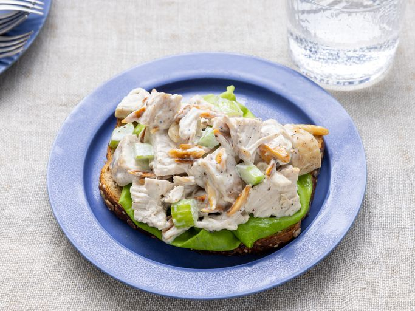

Chicken Salad

Everyone needs a good, basic chicken salad recipe in their collection of fool-proof dishes.
Homemade chicken salad is quick and easy to make with just a handful of everyday ingredients,
and is perfect for warm weather picnics, potlucks, lunches, or light dinners.
You can add or substitute chicken salad ingredients to suit your preferences, and it's genius at using up leftovers.
Ingredients
- ½ cup blanched slivered almonds
- ½ cup mayonnaise
- 1 tablespoon lemon juice
- ¼ teaspoon ground black pepper
- 2 cups chopped, cooked chicken meat
- 1 stalk celery, chopped
Steps
- Gather all ingredients.
- Place almonds in a frying pan. Toast over medium-high heat, shaking frequently. Watch carefully, as they burn easily.
- Mix together mayonnaise, lemon juice, and pepper in a medium bowl.
- Toss with chicken, toasted almonds, and celery.
- Enjoy!